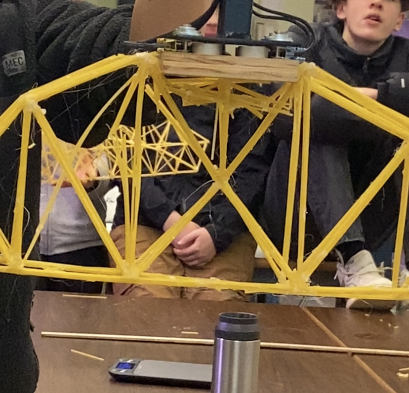

the top middle of the birdge completly gave out and became shredded sphagetti. im not completely sure why this happened but i think it was because the sphagetti peaces where too thin and got crushed under comprssion.
